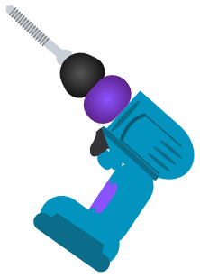
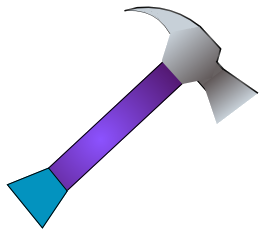
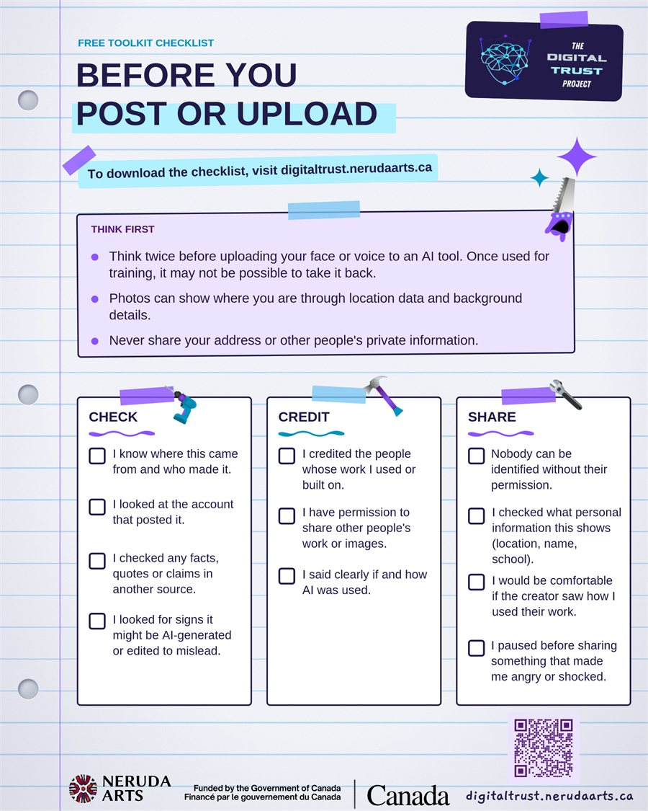
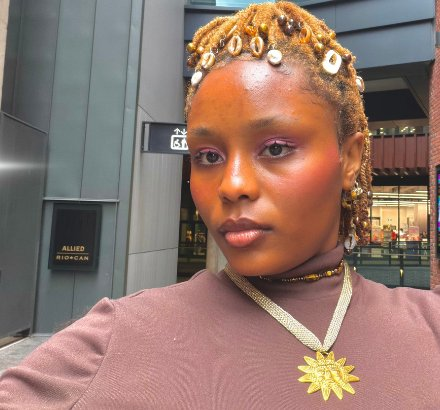

Made by students, with Neruda Arts
Digital Trust Toolkit
A free toolkit about AI, misleading content and creative work. For students, young creators and educators who want to make informed choices about what they trust, make and post.
Click the toolbox to open or close it.
What this toolkit is for
AI tools can now make images, voices, writing and videos that look and sound real. That makes it harder to know what to trust, and raises new questions about who made something and who deserves credit.
This toolkit was planned, written and designed by five student creators, using what students told us in workshops, focus groups and interviews. It is meant to be easy to understand, interesting, and useful in real life.
How we made it
Created by Kim Le and Karen Four of Digital Insites, in collaboration with Neruda Arts, the Digital Trust Project explored how young people understand, question and navigate artificial intelligence. High school students in Kitchener-Waterloo and Humber Polytechnic students in Toronto participated in workshops and focus groups to share their perspectives on AI-generated images, video, music, voice and writing.
Facilitators included Trish Hooktwith, Ruchika Batra, Addie Batra and Tammie Deubry in Kitchener-Waterloo, and Vivian Lee (ODLAN) and Rejané Claasen in Toronto. Drawing on insights from both cohorts, four Humber students and one University of Waterloo student developed this toolkit with mentorship from Digital Insites and Neruda Arts. Created by students, for students, the toolkit encourages critical thinking, digital awareness and responsible AI use. This project was funded by the Government of Canada through the Department of Canadian Heritage’s Digital Citizen Contribution Program (DCCP).
How the workshops helped
Every survey question improved across all three workshops. Results from the Toronto workshops, with 15 students, 3 workshops, 2 focus groups and 10 follow-up interviews.
13 of 13 students
felt confident they knew two ways to check if an image or video can be trusted
up from 5 before the workshop
8 of 11 students
felt confident they knew two ways to check if audio is real
up from 3 before the workshop
12 of 12 students
chose all the right steps when an AI tool gave them a fact and a source that hadn’t been checked
up from 9 before the workshop
Students answered before and right after each workshop. Source: Digital Trust Project: Toronto Cohort Report (October 2026).
Spot the AI image!
Each round shows a few images. One was made by AI. Can you find it?
How to play
- There are 6 rounds. Each one shows a few photos.
- Tap or click the photo you think was made by AI. (On a keyboard, press its number.)
- Tap the magnifying glass to zoom in on the details.
- You have 15 seconds a round. Practice mode has no timer.
Which one was made by AI?
Your results
Some images in this game were made with AI on purpose, to help you practise spotting it. The other photos were taken by our team.
Trust and fact-checking
Know the drill: verify before you trust.
How can we check whether an image, voice, piece of writing or video was made by AI, or is misleading in some other way? No single clue proves it, and the tools improve every year, so the goal is to build good checking habits.

Who posted it, and why?
- How old is the account? Many fake accounts are only days or weeks old.
- How often does it post? Hundreds of posts in a week is a red flag.
- Do older posts look like a real person’s life, or is it all the same kind of content?
- What is it trying to get you to do? Fakes usually want you to buy, click or share.
Images
- Zoom in on text, hands and backgrounds.
- Check shadows and reflections against the light.
- Use a reverse image search to find where it first appeared.
- Look for an “AI-generated” label or watermark, but don’t rely on it alone.
Voices
- Listen for flat emotion, odd pauses or missing breaths.
- Ask whether the person would really say this.
- Look for the original recording from a trusted source.
- Urgent call asking for money? Hang up and call back on a number you know.
Writing
- Check facts, names and quotes somewhere else.
- Notice smooth but vague writing with no real detail.
- Find out who wrote it and why.
Videos
- Watch lips, eyes and edges of faces as people move.
- Find who posted it first, and when.
- Be extra careful when a clip makes you angry or shocked.
Decision guide
- Pause. Does it make you angry or shocked, or push you to buy something?
- Who posted it? Check the account’s age, posts and followers.
- Where did it come from first? Use a reverse image search to find the original creator.
- Do trusted sources say the same? Check a trusted news outlet or an official website.
- Still not sure? Don’t share it.
Real examples shared in the workshops
A “handmade dress” shop that was all AI, with a website only 18 days old.
A copy account reposting a real creator’s videos.
A deepfake of a Canadian politician “selling” cryptocurrency.
Creativity and ownership
Hammer down your ownership.
Every creator learns from others. The question is where learning from someone’s work turns into taking it. These three ideas help draw the line.

Inspiration
Another work gives you an idea, a feeling or a direction, and you make something new and your own.
Remixing
You take parts of an existing work and change, combine or build on them, and you credit where they came from.
Copying
You reuse someone’s work, or most of it, and present it as yours without permission or credit.
Examples from different creative fields
A DJ released a fully AI-made song, got backlash, then re-recorded it himself. Students asked: if it’s a copy of the AI version, is it really his?
Someone screenshotted a photographer’s ad and used AI to swap in new people, keeping her set and flowers. That’s copying.
An AI-made trailer was shown at a panel; film students spotted it, but others thought it was real.
Using AI to organize your own notes is different from asking it to come up with the ideas.
Credit, permission and honesty
Tighten up your ethics.
When should you credit someone, ask permission first, or say that AI was used? Being open about how something was made helps people trust you and your work.
Credit people when
- You use or build on their work, idea, photo or music.
- Someone helped you make it.
Ask permission when
- You want to share someone else’s work, face or voice.
- A person can be identified in what you post.
Say AI was used when
- AI made or changed any part of the image, voice, text or video.
- People could reasonably assume you made it all yourself.
How much AI is okay?
“Human first, human last”, an idea from Vivian Lee’s workshops: start with your own ideas, let AI help only in the middle, and make the final decisions yourself.
Ask yourself: Did I start with my own ideas? Is AI helping my work or replacing it? Would I be comfortable telling people how I used it?
There is no single rule. Some students only use AI to organize their notes or fix spelling; others don’t use it for creative work at all.
Decision guide
- Did someone else make any part of it? Credit them.
- Is a real person shown or heard? Ask permission.
- Did AI make or change any part? Say so.
Example captions you can use
Photo and edit by me. Background generated with an AI image tool.
Remix of “Song title” by Artist Name, used with permission.
Inspired by the paintings of Artist Name. All drawing done by hand.
Written by me. I used an AI tool to check spelling.
Filmed and edited by me. Captions made with an AI tool.
Research, sketches and final design by me. AI used to summarize interview notes.
Before you post or upload
Reflect on what you saw.
A one-page checklist for checking, crediting and sharing responsibly. Tick each point before you post or upload.
Want everything in one go? Subscribe to get all the PDFs by email.
Think first
- Think twice before uploading your face or voice to an AI tool: once it’s used for training, it may not be possible to take it back.
- Photos can show where you are, through location data and background details.
- Never share your address, SIN or card numbers with AI tools, or anyone else’s private information.
Feeling overwhelmed?
You’re not alone
Keeping up with AI, fake content and the news can feel like a lot. Many students in our focus groups said they felt tired of checking everything, or worried about their future and what they had already shared online. If you feel this way too, you’re not alone.
What helped students
Talk it through
Talking with others who feel the same.
Keep it simple
Focusing on a few simple checking habits, instead of trying to check everything.
Your choice counts
Knowing that choosing not to use AI is also a valid choice.
One small step
Taking one small, practical step after learning about a risk.
In their own words: what students said in our focus groups
“I think really just feeling that I’m not alone in this.”
“Being aware and informed gives me confidence.”
If it feels heavy, talk to someone you trust: a friend, family member, teacher or counsellor.
Videos and infographics
Two videos and two infographics from the toolkit. Want printable copies? Subscribe and we’ll email you the PDFs.

For educators
Activities for class or workshops. Use them in pairs, small groups or as a whole class: there are no right answers.
Discussion questions
- Would you be happy with AI replacing actors, models or photographers?
- If someone cloned your voice, what could they do with it?
- Should creators be paid or asked before their work is used to train AI?
- Where is the line between AI helping your work and replacing it?
- If AI does entry-level tasks, how will new graduates gain experience?
- Who does the hidden work behind AI, like labelling data, and should users know about it?
Exercises
- Bias test: ask an image tool for “a doctor”, “a lawyer” and “a chief executive officer”, then discuss what you get.
- Break the AI: try to make an AI tool give a wrong answer.
- Real or AI: look at a few images and explain why you think each one is real or AI.
- Music spectrum: play a few short songs (AI-made, human-made and mixed). Students rate each from 1 (all AI) to 10 (all human), then explain their choice.
- My AI rules: write your own rules for consent, credit and saying when you used AI.
Want everything in one go? Subscribe to get all the PDFs by email.
AI and the environment
Using AI takes energy, and the data centres that run it also use water to stay cool. Images and especially videos take the most computing power, because every video frame is generated. How can we reduce our AI footprint and use AI more thoughtfully?
Use what already exists
A stock photo instead of generating a new image.
Ask first
Do I need AI for this, or would a search or my own work do?
Subscribe
Subscribe to get the printable toolkit pack by email: both infographics, the checklist and the classroom activities as PDFs. You’ll also get updates about the toolkit and our webinar for students and educators in January.
Check your email for the PDF pack: both infographics, the checklist and the classroom activities.
About the team
The Digital Trust Toolkit was created by five student creators, with guidance and mentorship from Digital Insites and Neruda Arts.
Meet the team
-
Chara Tan
Project Manager
Chara keeps our timelines, tasks and people aligned. She brings planning, coordination and a creative technologist’s eye, so our team can deliver a free toolkit on AI and creative work.
-
Ali Bagheri
Web Developer
Ali uses his Computer Science skills to turn our designs and content into a working website that students and educators can explore and navigate with ease.
-
Anum Iftikhar
UX Designer
Anum designed the website’s layout and style guide, and used research with students to help write its content. She also ran UX audits to guide each round of revisions.
-
Ashley Balbaa
Multimedia Designer
Ashley brings visual storytelling skills from Film and Television Production, turning our ideas into posters, graphics and videos that are clear, engaging and original.
-

Joan Mboya
Social Media Manager
Joan uses her digital marketing and UX skills to plan our content and build a community across Instagram, Facebook, TikTok and LinkedIn, sharing the project’s story authentically.
Sources and credits
Workshops
- Lee, V. (2026a). Workshop 1: Visual arts, design, & AI multimedia. Open Digital Literacy and Access Network.
- Lee, V. (2026b). Workshop 2: AI music and audio generation. Open Digital Literacy and Access Network.
- Lee, V. (2026c). Workshop 3: AI writing, publishing, & content creation. Open Digital Literacy and Access Network.
Credits
- Program created and led by
- Kim Le and Karen Four, Digital Insites, in collaboration with Neruda Arts
- Facilitators, Kitchener-Waterloo
- Trish Hooktwith, Ruchika Batra, Addie Batra and Tammie Deubry
- Facilitators, Toronto
- Vivian Lee (ODLAN), workshops; Rejané Claasen, focus groups
- Student team
- Chara Tan, Ali Bagheri, Anum Iftikhar, Ashley Balbaa and Joan Mboya
- Funding
- Government of Canada, Department of Canadian Heritage, Digital Citizen Contribution Program
- AI use
- The AI images in the game were made with an AI image tool, for teaching.